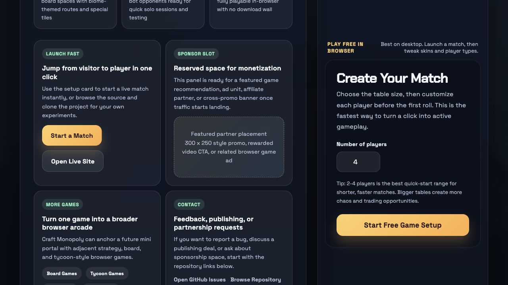

Learn the rules
See how turns, tiles, rent, jail, and chance cards work before your first match.
Open how to playCraft Monopoly is a free browser board game that combines Minecraft-style 3D visuals with Monopoly-inspired strategy. The goal is simple: make it easy for players to jump into a match, learn the rules quickly, and stay for one more round.

It is a browser-first strategy board game where players move around a 3D map, buy property, collect rent, pay taxes, draw chance cards, and try to outlast the table. Instead of chasing realism, the game leans into blocky visuals and readable systems so it feels approachable from the first click.
For an overseas traffic play, the homepage needs to act like both a game launch screen and an SEO landing page. Craft Monopoly now does that job: it gives players an immediate reason to click, and it gives search engines clear topic pages to crawl. That combination is what turns a standalone project into the foundation of a niche browser game business.
Craft Monopoly fits search terms around browser strategy games, online board games, and free 3D browser games because the game is playable instantly, easy to explain, and visually distinct from plain text-heavy board clones.
It also matches searches from players who like blocky aesthetics and Minecraft-inspired visuals, even if they are really looking for a light strategy game rather than a survival sandbox.
Yes. The game is built as a free browser experience with no install step.
No. You can mix AI players into the table, which makes solo matches possible.
No. It is an independent browser game inspired by property, rent, and board-control mechanics.
Jump from this guide straight into a live match. The setup flow takes less than a minute, and the site is built for quick browser sessions.